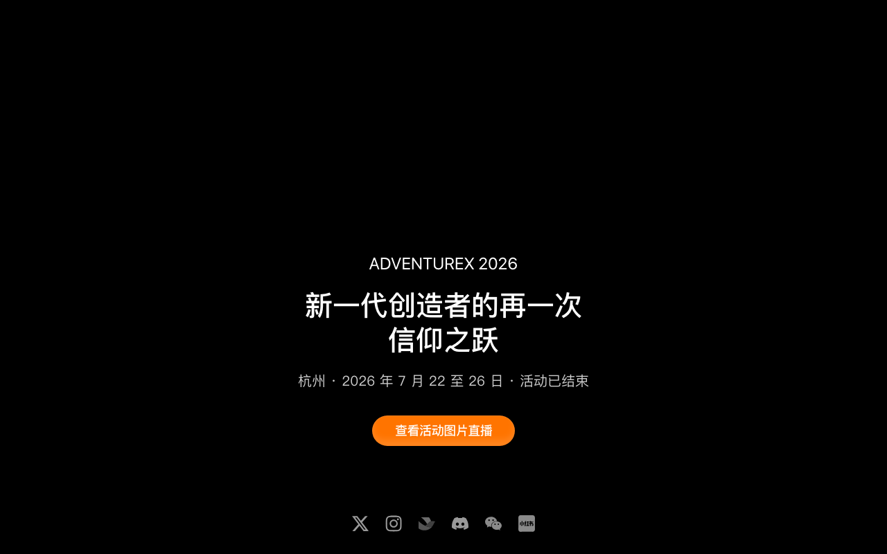
Think aloud: Wait, it says Hangzhou, July 22-26 2026, but also '活动已结束' — activity ended? That's confusing for a 2026 date that hasn't happened yet. Let me scroll to find application details.
URL/context: https://www.adventure-x.cn/zh/
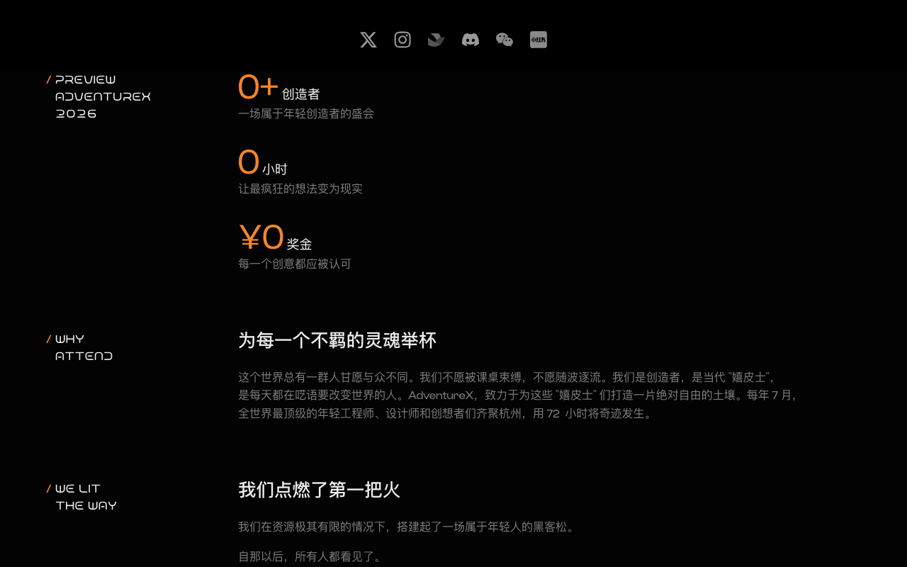
Think aloud: These stats all show zero — 0+ creators, 0 hours, ¥0 prize. That's odd, feels like placeholder numbers not loaded yet, or leftover from last year's page. Let me keep scrolling for actual dates and how to apply.
URL/context: https://www.adventure-x.cn/zh/
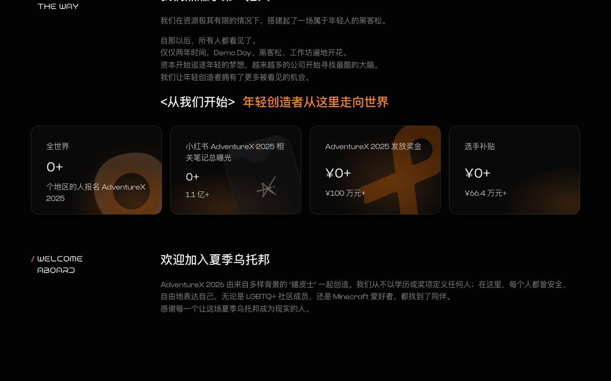
Think aloud: These are just stat cards with zeros, not clickable info I need. Still no sign of an actual apply button or eligibility list yet — let me keep scrolling.
URL/context: https://www.adventure-x.cn/zh/
Think aloud: Page just crashed to a 'couldn't load' error. Annoying, but before that I did catch a glimpse of dates and location in the hero banner. Let me reload and get back to that.
URL/context: https://www.adventure-x.cn/zh/
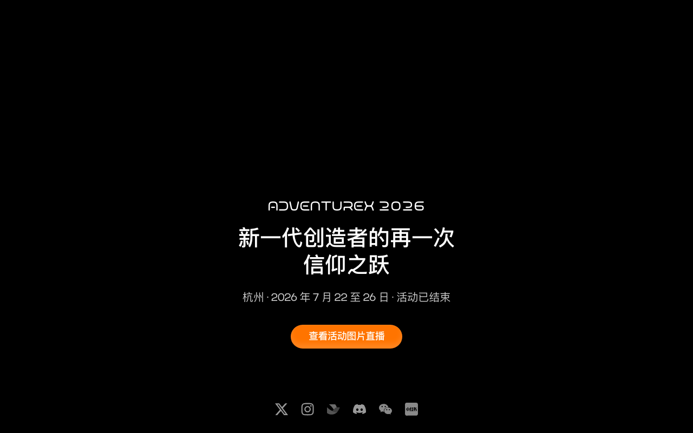
Think aloud: Page recovered. I can read '杭州 · 2026年7月22至26日 · 活动已结束' - so this AdventureX 2026 edition already ended. No sign of a register button anywhere yet, just sponsor logos and photo carousels.
URL/context: https://www.adventure-x.cn/zh/?
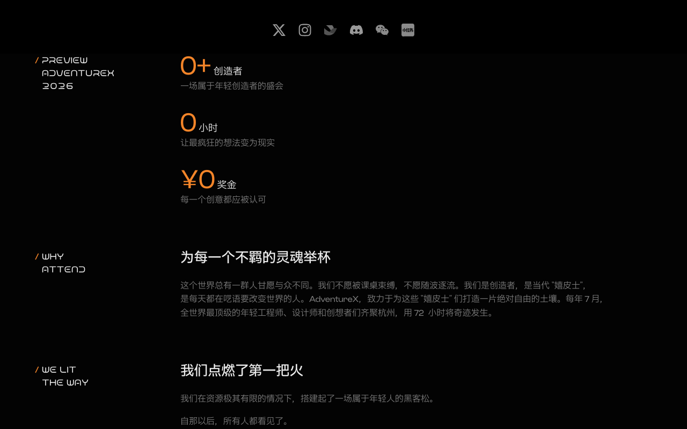
Think aloud: These are just social icons up top - X, Instagram, Discord, 小红书. Nothing about dates or applying here. Let me scroll further down for a real registration link or FAQ section.
URL/context: https://www.adventure-x.cn/zh/?
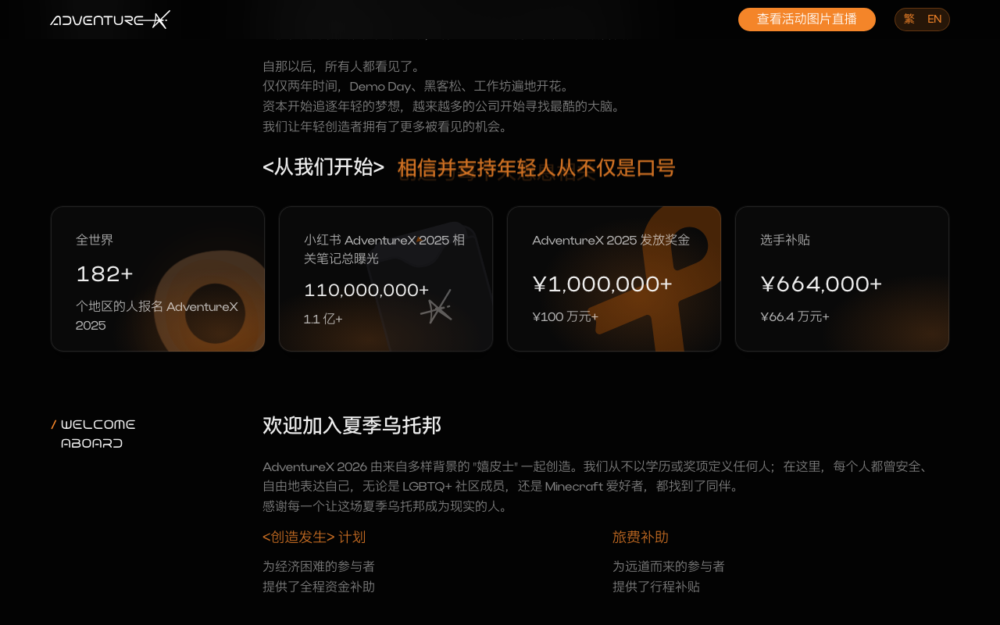
Think aloud: This confirms it clearly - 'huodong yi jieshu' means the event already ended, dates were July 22-26, Hangzhou. But I still don't see any 'apply now' or '报名' button anywhere, just partner logos and stats about last year. That's odd for a hackathon site.
URL/context: https://www.adventure-x.cn/zh/
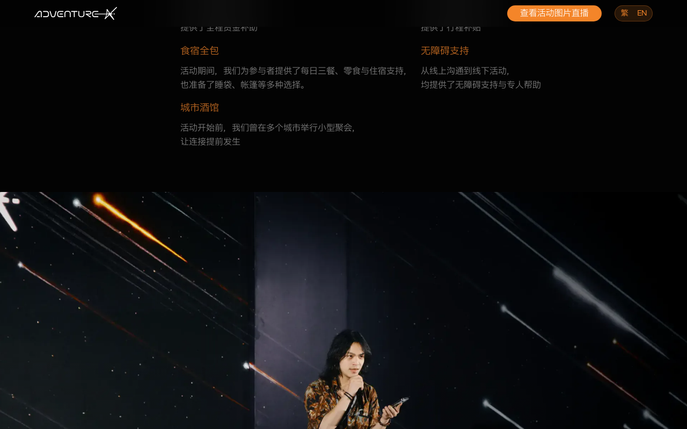
Think aloud: Just a photo carousel cycling through community pics now, nothing new about applying. I already got the dates and city from before - July 22-26 in Hangzhou - but still no visible 'apply' button anywhere on this page.
URL/context: https://www.adventure-x.cn/zh/
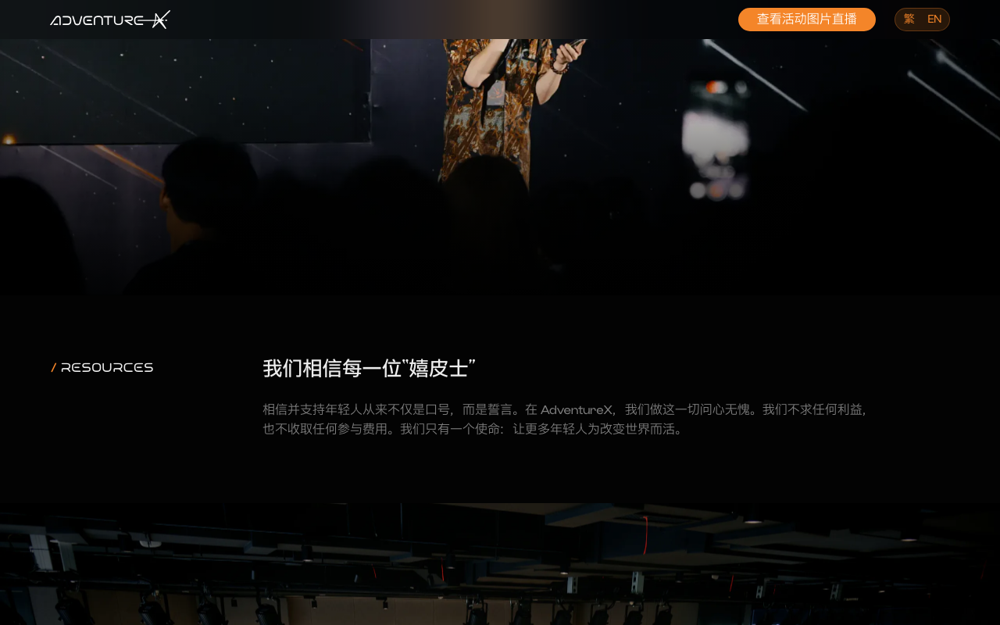
Think aloud: kind of glitching, no controls showing at all right now. I've scrolled through so much marketing content and still no clear 'apply' or '报名' button anywhere.
URL/context: https://www.adventure-x.cn/zh/

Think aloud: Still no clickable buttons showing up, just this stage photo again. Let me try switching to English - maybe the nav bar shows a clearer registration link that way.
URL/context: https://www.adventure-x.cn/zh/
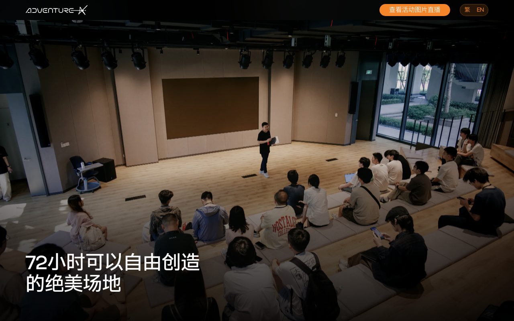
Think aloud: I've scrolled all the way to a huge sponsor logo wall in the footer - dozens of company names but still nothing that says '报名' or 'Apply'. This is frustrating for a hackathon page.
URL/context: https://www.adventure-x.cn/zh/
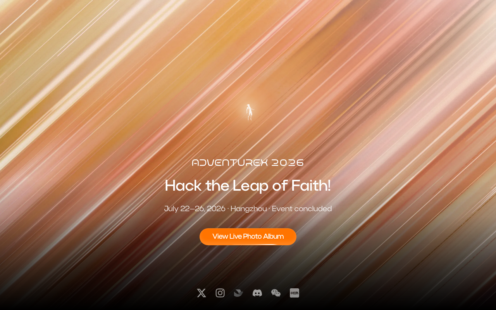
Think aloud: Dates say July 22–26, 2026 in Hangzhou, but it also says 'Event concluded' right next to that — that's confusing timeline info. Still no Apply or 报名 button anywhere after all this scrolling.
URL/context: https://www.adventure-x.cn/en/
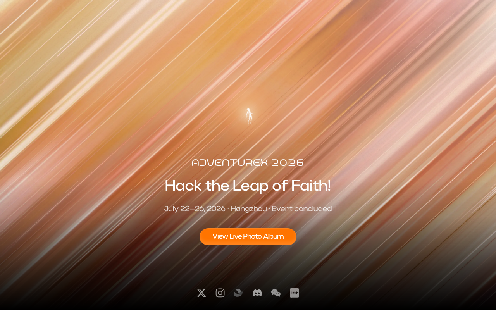
Think aloud: Still just carousel photos cycling in the footer area, no nav menu, no Apply link anywhere. I've hit the bottom and top of this page multiple times now with the same contradictory 'event concluded' + future 2026 dates and zero registration entry.
URL/context: https://www.adventure-x.cn/en/